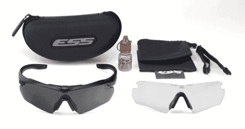
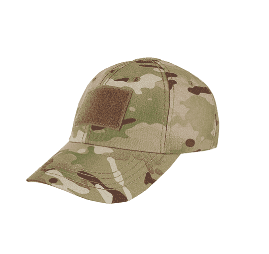

Сюда добавить какое-то предисловие типа мы покемоны, нам похуй, главное, чтобы арка и мультикам, и вообще, чтобы человек хороший был и т.д. и т.п. Но, если надо, вот кит-лист.
1. Очки* Не экономьте на зрении! Через глаза вы получаете до 95% информации о мире, поэтому их травма недопустима! Очки могут запотевать, покрываться царапинами, когда вы их протираете от влаги и пыли пальцами. Протирайте их только специальными мягкими безворсовыми салфетками-тряпочками для очков. Продаются в магазинах оптики, фотомагазинах (специализированные салфетки для оптики) Рекомендуются оригинальные очки марок: ESS (Ice, Naro, Crossbow), Wiley Х, Bolle, Revision, и подобные, отвечающие требованиям военных под защите глаз от скоростных частиц.
2. Кепи- Бейсболка без сеточки, полностью закрытая* Желательно иметь велкро для опознавательных\цветовых патчей. Цвет - мультикам. Хорошие фирмы: Ars Arma, Emerson, TMC, Helikon.
3. Панама Первый головной убор, который может считаться элементом маскировки. Одновременно защищает от солнца и насекомых на деревьях, и в то же время с помощью специальных шлевок позволяет закрепить элементы растительности на голове, разбивая силуэт вверху. Отечественные производители: Гиена тактикс, Стич профи, Корпус выживания.

4. Шапка. На фото ниже оригинал. Более ранние - серого цвета, более новые-койот.